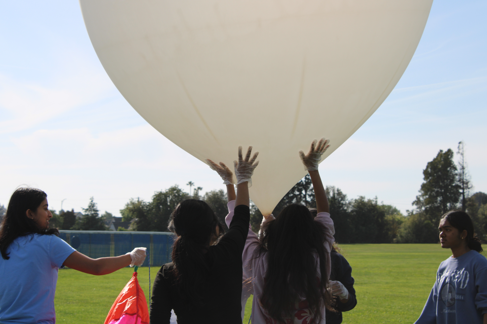
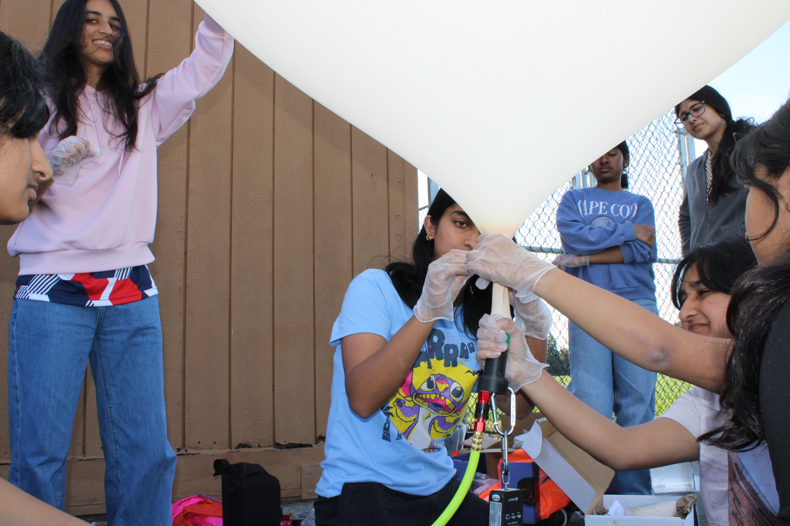
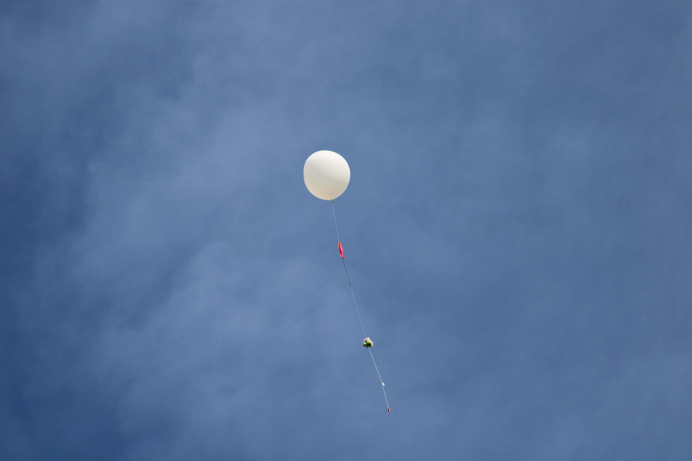

FEATURED PROJECT
High-Altitude BalloonSat
Led a 10-member software team developing the flight software for a high-altitude BalloonSat designed to collect atmospheric data and study the relationship between ozone and UV levels throughout the stratosphere.
Developed Python software integrating ozone, UV, altitude, GPS, and environmental sensors on a Raspberry Pi-based flight system. I also worked on LoRa telemetry, GPS communication, camera integration, data logging, and system testing.
The BalloonSat successfully launched on May 1, 2026. I also presented our work at the SmallSat Education Conference at Kennedy Space Center.